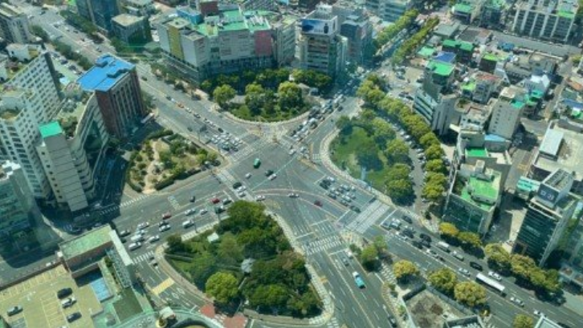
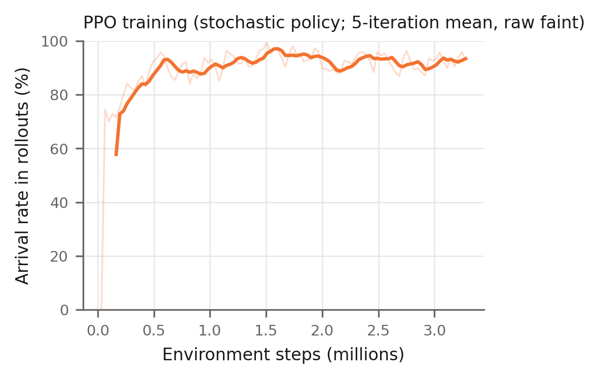

NORA: NOhyeong, Jeju — Reinforcement-learning Autonomous driving in SUMO
Abstract
NORA learns autonomous driving policies in a SUMO reconstruction of Nohyeong, a five-way signalized intersection in Jeju. The task combines route completion, signal compliance, lane selection, and traffic interaction across 24 routes and diverse starting lanes. We train a behavior cloning (BC) policy on 480,000 selected IDM trajectories containing 98,759,227 state–action pairs, then fine-tune it with PPO anchored to the BC policy through a KL penalty. The policy maps a 52-dimensional partial observation to acceleration and lane-change decisions without automatic signal compliance or a lane-change safety gate for the ego vehicle. Selected on a separate validation suite, the PPO checkpoint achieves 96.84% success on 7,050 test cases with junction collisions counted, compared with 90.79% for BC alone. This is a 6.04 percentage-point improvement, while red-light violations fall from 317 to 20.
Project Overview
The goal is to reach the end of an assigned route while interacting with surrounding traffic. The task covers 19 central-junction routes and five circular-road routes. Different starting lanes and traffic states require different decisions even on the same route.
- Start from demonstrations: learn from IDM vehicles moving through mixed background traffic.
- Fine-tune to reduce failures: use event rewards and a BC anchor to improve the policy without unrestricted drift from its initialization.
- Separate selection from testing: build validation and test suites with traffic seeds distinct from training, and select the final checkpoint on validation results.
Road Environment


Nohyeong is a five-way signalized intersection with a circular road around a green space and right-turn slip roads. The upper circular-road segment serves as a parking area in the real world and is blocked in the model, shown in orange. The four roads other than Wollang-ro include U-turn routes from the leftmost lane.
| Arm | Road | Distance to center |
|---|---|---|
| A1 | Nohyeong-ro southwest | 320 m |
| A2 | Nohyeong-ro northeast | 320 m |
| A3 | 1100-ro south | 320 m |
| A4 | Wollang-ro northwest | 260 m |
| A5 | Noyeon-ro east | 320 m |
Speed limits are 13.89 m/s on the approaches and 8.33 m/s on the circular road. Signals use a five-stage, 120-second grouped cycle. Background demand is 4,700 vehicles/hour, with Krauss (35%), IDM (30%), EIDM (20%), and ACC (15%) car-following models. The simulation step is 0.5 seconds and each episode lasts at most 500 seconds.
Learning Framework

52-dimensional Partial Observation
| Dimensions | Information |
|---|---|
| 31 | Speed, neighboring vehicles, lane connectivity and density |
| 4 | Signal color and distance to stop line |
| 8 | Distance and turn direction for the next two road choices |
| 6 | Circular-road state and merging traffic |
| 2 | Lateral offsets to the next road entrances |
| 1 | Progress along the initial road segment |
Neighboring traffic is observed within 50 m and signals within 100 m. Guidance provides the direction and distance of the next road choices, but does not directly identify a route-compatible lane. Lane-connectivity features represent physical connections independently of the route.
Hybrid Actions
A shared MLP (52 → 256 → 256, ReLU) produces continuous acceleration and three lane choices: left, keep, and right. Acceleration is bounded by ±5.4 m/s². Evaluation uses the acceleration mean and lane argmax. Automatic braking, signal compliance, and lane-change safety gates are disabled for the ego; physically impossible commands, such as changing into a nonexistent lane, cannot execute.
From BC to Anchored PPO
BC minimizes acceleration MSE and class-weighted lane cross-entropy. The PPO actor starts from BC weights and includes a KL anchor to a frozen BC policy (coefficient 0.03). A separate critic receives five initial warm-up iterations. Fine-tuning uses 512 environments across 16 SUMO processes for 100 iterations, collecting 3,276,800 transitions.
Event-based Rewards
| Event | Reward |
|---|---|
| Arrival | +1 |
| Collision / red-light violation | −2 |
| Wrong lane / timeout | −1 |
| Executed lane change | −0.01 |
| Each step | −0.0001 |
| Accurate stop at a red signal | Up to +0.01, once per signal |
No direct speed or progress reward is used. Full observation definitions and hyperparameters are documented in Algorithm.
Experiments and Results
7,050 test cases = 94 route/start-lane combinations × 75 traffic states. The 2,820-case validation suite and the test suite use traffic seeds distinct from training and from each other. Each case starts a fresh SUMO instance and uses a deterministic policy, with junction collision checking enabled. Success means reaching the route end without triggering a failure condition.
| Policy | Success | Arrivals | Collisions | Red lights | Wrong lane | Timeouts |
|---|---|---|---|---|---|---|
| BC | 90.79% | 6401 | 120 | 317 | 200 | 12 |
| BC → Anchored PPO (iter 80) | 96.84% | 6827 | 89 | 20 | 103 | 11 |
Success improves by 6.04 percentage points using unrounded rates, while red-light violations fall from 317 to 20. Collision rate decreases from 1.70% to 1.26%. Mean speed is 7.75 m/s for BC and 7.32 m/s for PPO; the improvement in completion does not imply higher average speed.


Validation-based Checkpoint Selection
Checkpoints from iterations 50–100 were evaluated on validation data. Iteration 80 was selected with 96.49% validation success. Iteration 100 achieves 93.38% test success, so the last checkpoint is not automatically the final model. The 1,800-case fixed-route suite overlaps PPO training traffic states and is excluded from the final PPO comparison.

View training curves

Evaluation records: BC JSON · PPO JSON · Checkpoint selection
Road Driving Dataset
BC uses 480,000 IDM trajectories and 98,759,227 state–action pairs. Krauss, EIDM, and ACC vehicles remain as surrounding traffic; only IDM vehicles provide demonstration labels. Expert observations and policy observations are computed by the same function.
| Split | Trajectories | State–action pairs |
|---|---|---|
| Training | 456,000 | 93,805,940 |
| Validation | 24,000 | 4,953,287 |
Each of the 24 routes contributes 19,000 training trajectories and 1,000 validation trajectories. Splits are assigned by simulation run, preventing samples from the same run from crossing the split. NPZ shards contain observations and normalized acceleration/lane-change labels. Lane changes account for about 0.73% of training samples, so a class-weighted loss addresses this imbalance.
These counts describe the final BC training data documented in final3. The repository includes the manifest, configuration, and SHA-256 list; the NPZ shards themselves are not tracked in Git. The public dataset can be inspected separately on Hugging Face.
View Dataset on Hugging FaceLimitations and Future Work
- Training/evaluation mismatch: junction collision checking is disabled during expert collection and PPO training, but enabled for all headline results. The observation does not explicitly represent every conflicting vehicle inside the junction.
- One site and configuration: results describe the Nohyeong network, configured demand and signals, and the final seed-0 training run. Transfer to other sites or real roads has not been established.
- Remaining failures: the selected policy still produces 89 collisions and 20 red-light violations on the test suite. Future work includes richer conflict-vehicle observations and evaluation under additional traffic conditions.
- Software sensitivity: small numerical differences across PyTorch/CUDA builds can change long-horizon rollouts and training. Exact reproduction requires the stage-specific environments in the documentation.
Reproducibility and Resources
A single script connects suite preparation, expert collection, BC training, PPO fine-tuning, and validation/testing. Saved models, settings, and evaluation records are tracked under results/final/ on the final3 branch.
SMOKE=1 bash scripts/reproduce_pipeline.sh
bash scripts/reproduce_pipeline.sh
Environments and full reproduction commands · Algorithm details · Report source (LaTeX)
Contributions and Acknowledgments
This is a course project for Artificial Intelligence and Control for Autonomous Driving (ICE3052_41) at Sungkyunkwan University. Building on the course SUMO/PPO code, the project develops the Nohyeong environment, IDM expert collection, behavior cloning, Anchored PPO, and separate evaluation suites. Individual author roles will be added.
Original course repository: bmil-ssu.